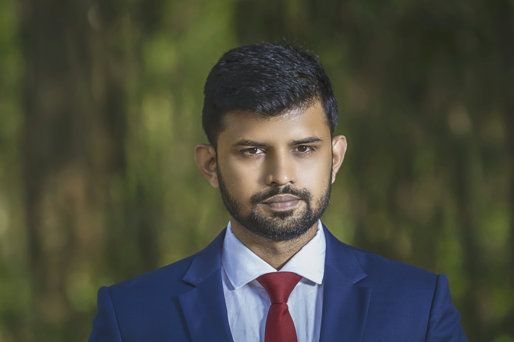

|  Tanvir Ahammad Lecturer Department of social Work New Model University College,Dhanmondhi,Dhaka. T:01913449093.E:tanvirahammad76@gmail.com |
| Summary | A high performing civil engineer who has considerable experience of working on infrastructure,utilities,geotechnical,structural,highways,drainage and flood prevention projects.Craig possesses a strong desire to work on exciting and diverse projects that make a difference to people's lives. He is committed to providing a high quality service delivery to every client and project he works on,and is currently looking for employment in an open,friendly and professional environment where ideas are shared and opportunities seized. |
| Skills | Engineering | Professional | Personal |
|---|---|---|---|
| site supervision waste infrastructure structural engineering carring out site audits estimating techniques architectural design Tubbelling specialist engineering concept |
Customer focused Financial management people management quality assurance conducting research risk assessments HSE reviews Planning regulations |
Problem solving professional manner safety conscious can handle stress Always pro-active Attention to detail Logical thinker Communication skills |
| Career | |
|---|---|
| CIVIL ENGINEER May 2007-present Building Surveyors Responsible for coming up with creative solutions to technical problems to maintain the company's competitive edge on bids and projects. Also in charge of liaising with other engineerin disciplines on projects to ensure integrated solutions for projects meet objectives. CIVIL ENGINEER Feb 2006- May 2007 Construction Company |
| Academic | |
|---|---|
| Nuneaton University 2003-2006 Civil Engineering BA(Hons) Nuneaton College 2001-2003 A levels: Math(A) English(C) Physics(B) Geography(D) |